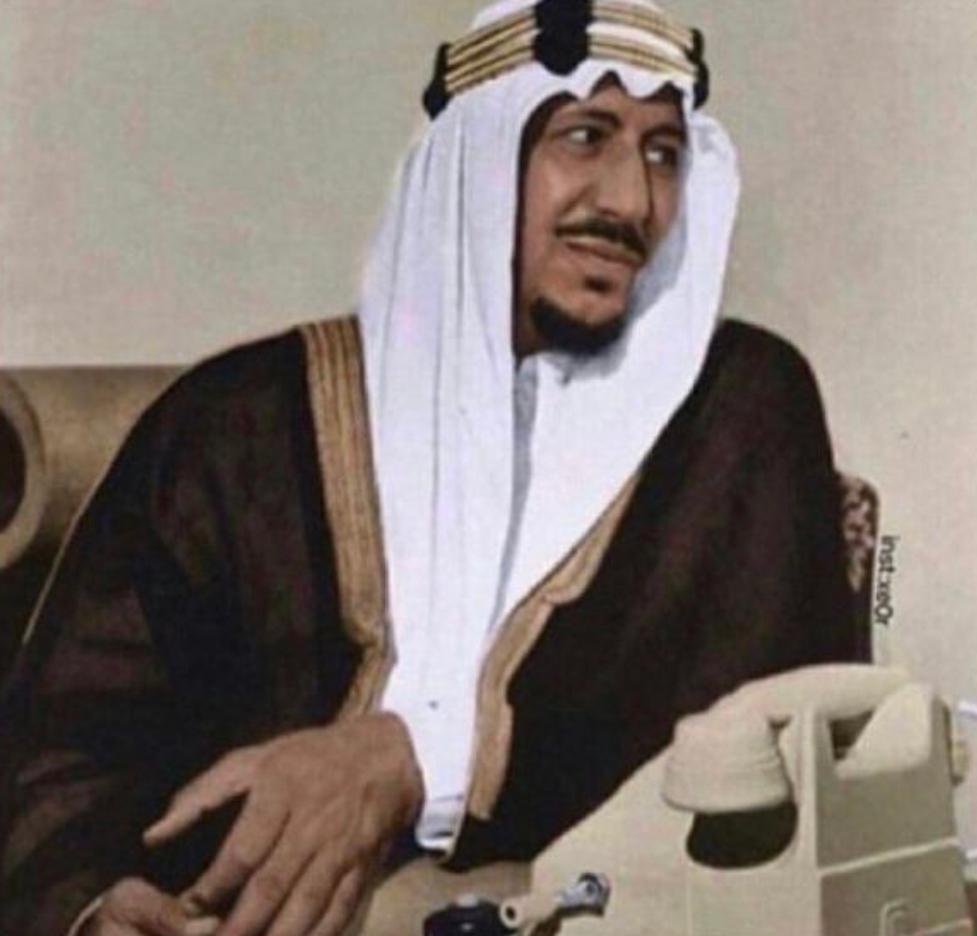

الملك سعود بن عبدالعزيز بن عبدالرحمن ال سعود....رحمه الله

هو ثاني ملوك المملكة العربية السعودية
من ابرز إنجازات الملك سعود رحمه الله
- انشاء الجامعة الاسلامية في المدينة المنورة
- انشاء جامعة البترول والمعادن
- انشاء اول رصيف للبواخر , انشاء اول صالة لاستقبال الحجاج
- دعوتة الى المؤتمر الاسلامي الذي انثقبت منه رابطة العالم الاسلامي
حياة الملك سعود
| الميلاد |
الوفاة |
| مارس 16 |
اغسطس 1 |